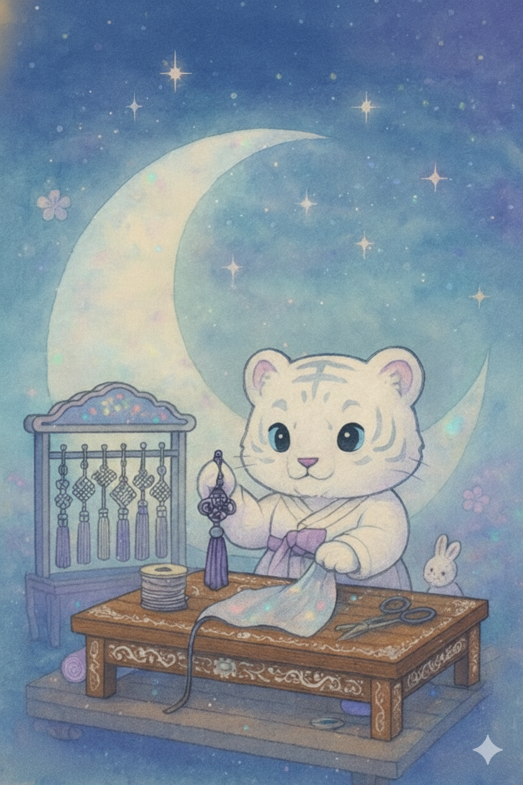

당신만의 수공예 일상
고즈넉한 전통의 숨결이 살아 숨 쉬고,
세련된 현대의 감각이 조화롭게 어우러진 곳.
여기, 전통의 아름다움과 현대의 감성을 담은 수공예 작품을 만나보세요.
오래된 멋과 새로운 감각이 만나는 특별한 경험이 당신을 기다립니다.


고즈넉한 전통의 숨결이 살아 숨 쉬고,
세련된 현대의 감각이 조화롭게 어우러진 곳.
여기, 전통의 아름다움과 현대의 감성을 담은 수공예 작품을 만나보세요.
오래된 멋과 새로운 감각이 만나는 특별한 경험이 당신을 기다립니다.